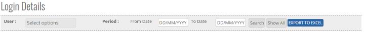
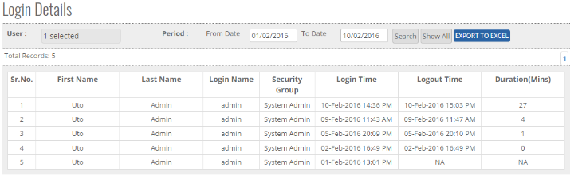


	<section>
		<article>
			<h2>Login Details Report<span></span></h2>
			<div>
				<p></p>

				<p>Login Details Report comes under Reports Module. This reports is accessible to those user who has right for this module.</p>

				<p>Click on "<b>Reports</b>" and then click on "<b>Login Details</b>" </p>

				<div class="triangle-border top">				
					
				</div>

				<p>- As shown in the above Image, Select "<b>Users</b>" from drop down, user can select Single or Multiple User Name.</p>

				<p><b>Start Date & End Date</b> - User can select Start Date & End Date, this will display the login and log out details of the user during the rights period selected.</p>

				<p><b>Search</b> - Where user can search by name, rights period etc.</p>

				<p><b>Show All</b> - Will help to get Login details of all Users.</p>

				<p><b>Export To Excel</b> - user can export Login details in Excel by selecting Export to Excel Button.</p>

				<p><b>Total Records</b> - It will show Total Login Records Count of users.</p>

				<div class="triangle-border top">				
					
				</div>

				<p>Here the user has selected admin as a user and has selected the rights period between 1<sup>st</sup> Feb and 10<sup>th</sup> Feb'16. Result is displayed as shown in the above image.</p>
				
			</div>
		</article>
	</section>